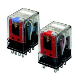
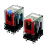
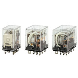
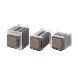

Building Automation
Industrial Automation
Power Automation & Safety


Bangladesh Distributor
Question
What are the recommended replacement products for G2J General-purpose Relays or G4J?
Answer
1.Replacement products for G2J and G4J depend on the model number. Check in the following table.
| Discontinued model | Recommended replacement | Remarks | |||||
| Contact form | G2J pr G4J (See note 1) | ||||||
| AC coil | DC coil | ||||||
| 1 pole | SPST-NO | Hinged Relay (See note 2) | G2J-1112T G4J-1142T | Hinged Relay (See note 2) | G2J-1112T-US G4J-1142T-US | G7J-2A2B-T G7J-3A1B-T G7J-4A-T | See note 5. |
| 2 poles | SPST-NO/ SPST-NC | G2J-2112T G4J-2142T | G2J-2112T-US G4J-2142T-US | G7J-2A2B-T G7J-3A1B-T | |||
| DPST-NO | G2J-2212T G4J-2242T | G2J-2212T-US G4J-2242T-US | G7J-2A2B-T G7J-3A1B-T G7J-4A-T | ||||
| 3 poles | DPST-NO/ SPST-NC | G2J-3212T G4J-3242T | G2J-3212T-US G4J-3242T-US | G7J-2A2B-T G7J-3A1B-T | |||
| 3PST-NO | G4J-3342T | G4J-3342T-US | G7J-3A1B-T G7J-4A-T | ||||
| Plunger Relay (See note 3) | G2J-3312T G2J-3312T-US G2J-33124T | Hinged Relay (See note 4) | --- | ||||
| 4 poles | DPST-NO/ DPST-NC | G2J-4212T G2J-4212T-US G2J-42124T | --- | G7J-2A2B-T | |||
| 3PST-NO/ SPST-NC | G2J-4312T G2J-4312T-US G2J-43124T | G2J-4342T-3 --- --- | G7J-3A1B-T G7J-3A1B-T-KM | See note 6. | |||
| 4PST-NO | G2J-4412T G2J-4412T-US G2J-44124T | G2J-4442T-3 G2J-4442T-US-3 --- | G7J-4A-T G7J-3A1B-T-KM | ||||
Note:
1.Discontinued models with "US" after the model number indicate that they are UL/CSA-approved models. The recommended replacement models are all UL and CSA approved even without the suffix "US".
2.The design of G2J was modified in 1981 to produce G4J. This is why the discontinued models are G2J or G4J.
3.Discontinued Plunger Relays with five numbers at the end of the model number indicate that they have bottom-mounted cases. Models with four numbers can be mounted either by using W-brackets or an S-brackets only.
4.Discontinued Hinged Relays with the suffix "-3" in the model number indicate that they satisfy the VDE C/250 Class II requirements (8 mm min. insulation between coil and contacts). Recommended replacement models for the G7J are indicated by the suffix "-KM".
5.Some models have more than two replacement models. This is because there are no 1-, 2-, or 3-pole models for G7J. It uses a 4-pole configuration that can switch to other modes.
6.Discontinued models with the suffix "-3" in the model number must be replaced by G7J models with the suffix "-KM", and discontinued models without the suffix "-3" must be replaced with G7J models without the suffix "-KM". (See note 3.)
2.Comparison of the G2J or G4J, and G7J
| Items | G2J or G4J | G7J | Remarks |
| Mounting method | W-bracket: M4 screws in 35-mm straight line S-bracket: M4 screws at diagonally opposed corners of a 58 x 22-mm rectangle Bottom-mounted case: M4 screws at diagonally opposed corners of a 20 x 60 rectangle, G2J models only | W-bracket: M4 screws in 35-mm straight line S-bracket: Not applicable Bottom-mounted case: Not applicable | See note 1. |
| Dimensions (including W-brackets) | G4J: 39 x 50 x 73 mm (W x D x H) G2J: 1, 2, or 3 poles: 39 x 44 x 66 mm (W x D x H) 3 or 4 poles: 39 x 59 x 66 mm (W x D x H) Bottom-mounted: 38 x 69 x 61 mm (W x D x H) | 35 x 52 x 64 mm (W x D x H) | See note 2. |
| Tab terminals | #250 terminals | #250 terminals | |
| Operating coil rated voltage (V) | AC: 6, 12, 24, 50 100/(110), 200/(220) DC: 6, 12, 24, 48, 100 | AC: 24, 50 100 to 120, 200to 240 DC: 12, 24, 48, 100 | See note 3. See note 4. |
Note:
1.If W-brackets were previously used, it may be possible to mount the replacement Relays without modifications to the structure, but a new W-brackets (R99-04 FOR G5F) must be purchased. This is because W-brackets are not compatible.
If S-brackets were previously used, 4.5-mm-dia. holes or holes for M4 screws must be drilled to mount the replacement Relays using the W-brackets. (G7J cannot be mounted with S-brackets.)
If bottom-mounted cases were previously used, 4.5-mm-dia. holes or holes for M4 screws must be drilled to mount the replacement Relays using the W-brackets. (G7J does not have models with bottom-mounted cases.)
2.If G4J with a 2-mm depth, or a 1-, 2-, or 3-pole G2J with an 8-mm depth was used with a bottom-mounted case, the height will increase by 3 mm.
3.If an operating coil voltage of 6 VAC, 12 VAC, or 6 VDC was used, there are no recommended replacement models. This is because G7J do not support these voltages. However if the voltage can be converted to a voltage supported by G7J, it can be used.
4.G7J Relays with AC coils have built-in full-wave rectifiers, so the rated current will be reduced by half or even a third. For this reason, if Solid-state Relays are used to operate the Relay, a reset failure may occur due to the reduced load.
Recommended Products
 MY
MY
New Latching Levers for Circuit Checking Added to Our Best-selling MY General-purpose Relays
LY
Power-switching Compact General-purpose Relays
G3PE (Three-phase)
Compact, Slim-profile SSRs with Heat Sinks. Solid State Contactors for Three-phase Heaters Reduced Installation Work with DIN Track Mounting.
Other General Purpose Relays FAQ
-
The Relay does not operate even when voltage is applied. Why is this?
-
We were using G2R General Purpose Relay to turn a solenoid valve ON and OFF, and sparks at the contact damaged the relay after only about 3 months of use. What caused this, and what kind of countermeasure is there for it?
-
A Relay burned out. Why is this?